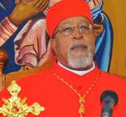

The Ethiopian Catholic Archeparchy of Addis Abeba, officially the Metropolitan sui iuris Archeparchy of Addis Abeba (Latin: Metropolitana sui iuris archieparchia Neanthopolitana)[2] is the metropolitan see of the Ethiopian Catholic Church, a sui iuris metropolitan Eastern Catholic Church. The cathedral of the see is the Cathedral of the Nativity of the Blessed Virgin Mary, in the national capital Addis Ababa.[1] It has three suffragan eparchies. Also in Ethiopia are nine Latin jurisdictions (Apostolic Vicariates and Apostolic Prefectures), which, not being of diocesan rank, are not organized as parts of an ecclesiastical province and are instead immediately subject to the Holy See. The Ethiopian Catholic Church reports to the Dicastery for the Eastern Churches, while the Latin jurisdictions depend on the missionary Dicastery for Evangelization. The Catholics in the Latin jurisdictions are about six times as numerous as those in the Ethiopic jurisdictions.[3] Unlike some other countries, where jurisdictions of the Latin Church and of one or more Eastern Catholic Churches overlap, all ecclesiastical jurisdictions in Ethiopia are geographically distinct and each territory has a single hierarch or ordinary. All the hierarchs and ordinaries are members of the interritual Episcopal Conference, which until the foundation of the Eritrean Catholic Church in 2015 also counted the Eritrean hierarchy as members and, from the 1993 declaration of the independence of Eritrea until 2015, was called the Episcopal Conference of Ethiopia and Eritrea.[4] The episcopal conference is now again named without mention of Eritrea.[5][6] The Metropolitan Archeparch of Addis Abeba is Cardinal Berhaneyesus Demerew Souraphiel, who is also president of the episcopal conference.

The Ethiopian Catholic Archeparchy of Addis Abeba includes several Catholic parishes. Here are some of
the
notable ones:
- Church of the Nativity of Mary Cathedral
- Holy Savior parish of Addiss Ababa
- Yeka Kidane Mehret parish
- St. Joseph parish
- St. Gabriel parish
- St. Mariam Tsion
- St. peter & Paulparish/Mojo/
- St. Francis of Assisil parish
- St. Peter Church
- St.Michael parish
- Mary Help of Christians parish
- Carmelos Mariam Chaple
- Consolata Mariam Chaple
- Bizuhanwa Mariam Chaple
- Bole Bulbula Daughters of Mary help of Christians Salesian Sisters
- Holy Trinty parish/Debre Zeit/
- Akaki Kaliti Chaple
- St. Joseph parish/Nazret/
- Holy Savior parish/Mendida/ These parishes serve the Catholic community in the region and offer various spiritual and community services.
Holy Matrimony Ceremony Detailes
Catholic marriages in Addis Ababa are typically held in one of the Catholic parishes within the
Archeparchy of
Addis Abeba. Here are some steps and considerations for planning
a Catholic marriage in the area:
- Contact the Parish: Reach out to the parish where you wish to have the ceremony. They will provide you with information on the requirements and process.
- Pre-Marriage Counseling: Couples are usually required to attend pre-marriage counseling sessions to prepare for married life.
- Documentation: Ensure you have all necessary documents, such as baptismal certificates and any other required paperwork.
- Mass Schedule: Coordinate with the parish to schedule the wedding mass. This may involve selecting a date and time that aligns with the parish's schedule.
- Rituals and Traditions: Familiarize yourself with any specific rituals or traditions that may be part of th ceremony.

Baptism Procedures
The baptism of Jesus is a significant event in the New Testament, recorded in the Gospels of Matthew, Mark, and Luke. Jesus' baptism takes place in the Jordan River, a location known for its symbolic significance in Jewish history. John the Baptist,a prophetic figure calling for repentance and the coming of the Messiah, is performing baptisms in the river.
Catholic baptisms in Addis Ababa are typically held at various parishes within the Ethiopian
Catholic
Archeparchy of Addis Abeba. Here are some steps and considerations for planning a Catholic baptism
in
the
area:
- Contact the Parish: Reach out to the parish where you wish to have the baptism. They will provide you with information on the requirements and process.
- Pre-Baptismal Preparation: Couples and parents are usually required to attend pre-baptismal classes to prepare for the sacrament.
- Documentation: Ensure you have all necessary documents, such as baptismal certificates for parents and godparents.
- Scheduling: Coordinate with the parish to schedule the baptism. This may involve selecting a date and time that aligns with the parish's schedule.
- Rituals and Traditions: Familiarize yourself with any specific rituals or traditions that may be part of the baptism ceremony.
First Holy Communion Ceremony
First Holy Communion is a significant milestone in the life of a Catholic child. The history of First Holy Communion can be traced back to the Last Supper, a pivotal event in Christianity where Jesus Christ shared bread and wine with his disciples, instructing them to partake in remembrance of him. This act, known as the Eucharist, forms the foundation of the sacrament of Holy Communion within the Catholic tradition. The early Christian community continued this practice, emphasizing the spiritual significance of partaking in the body and blood of Christ.
In Addis Ababa, the
preparation
and celebration of First Holy Communion typically involve several steps:
- Preparation Classes: Children and their parents attend classes to learn about the sacrament, its significance, and the responsibilities that come with receiving the Eucharist.
- Reconciliation: Children usually go through the Sacrament of Reconciliation (Confession) before receiving their First Communion.
- Practice Masses: There are often several practice Masses where children can participate and get familiar with the process .
- The Ceremony: The actual First Holy Communion ceremony is a special Mass where the children receive the Eucharist for the first time.
- Celebration: After the ceremony, there is often a celebration or party to mark the occasion. The Ethiopian Catholic Archeparchy of Addis Abeba, along with local parishes, organizes these events and ensures that children and their families are well-prepared and supported throughout the process.
Children and Adolecents Participation
Catholic children and adolescents in Addis Ababa have various opportunities to participate in religious,
educational, and social activities. Here are some key areas of involvement:
- Church Activities: Children and adolescents often participate in Sunday Mass, catechism classes, and other church events. They may also join youth groups and engage in activities like choir practice, prayer groups, and retreats.
- Educational Programs: Many Catholic parishes and organizations offer educational programs, including schools and after-school programs. These programs focus on both academic and spiritual development.
- Social Services: Organizations like the Salesians of Don Bosco provide support to at-risk children and adolescents. They offer vocational training, informal education, and social recovery programs to help children reintegrate into society1.
- Community Service: Youth are encouraged to participate in community service projects, such as helping the poor, visiting the elderly, and participating in environmental clean-up efforts.
- Sports and Recreation: Some parishes and organizations offer sports and recreational activities to promote physical health and teamwork among children and adolescents.
Yekdus gebriel Kokeb Zemarian A.A
These activities help young people grow in their faith, develop important life skills, and contribute positively to their communities.
Participation of the Youth
Ca tholic youth in the Archeparchy of Addis Abeba have several opportunities to get involved in various
activities and programs. Here are some key areas of participation:
- Youth Groups and Ministries: Many parishes have youth groups that meet regularly for prayer, Bible study, and fellowship. These groups often organize events and activities to help young people grow in their faith.
- Awassa Youth Camps: The Catholic Church runs programs like the Awassa Youth Camps, which provide a space for young people to engage in activities such as Bible studies, musical events, choral singing workshops, and sports.
- Leadership Training: Programs are available to train young people as group leaders, who can then work with other young people in their own parishes. This helps to build a sense of community and responsibility among the youth.
- Retreats and Spiritual Activities: There are opportunities for young people to participate in retreats and other spiritual activities to deepen their relationship with God.
- Community Service: Youth are encouraged to engage in community service projects, such as helping the poor, visiting the elderly, and participating in environmental clean-up efforts.
- Marriage Preparation and Sexual Education: Programs addressing marriage preparation and responsible sexual education are also part of the youth apostolate.

Tsion Mariam
Scout Team with Cardinal

Participation of the Laity-Council
Catholic seniors in Addis Ababa are actively involved in various activities and programs within the
church
community. Here are some key areas of participation:
- Prayer Groups and Bible Studies: Many seniors participate in prayer groups and Bible study sessions, where they can deepen their faith and share their experiences with others.
- Community Service: Seniors often engage in community service projects, such as helping the poor, visiting the elderly, and participating in environmental clean-up efforts.
- Social Events: The church organizes social events, such as luncheons, picnics, and gatherings, to foster a sense of community and fellowship among seniors.
- Volunteering: Seniors are encouraged to volunteer their time and skills in various church activities, including assisting with parish events, teaching catechism classes, and providing support to other parishioners.
- Health and Wellness Programs: Some parishes offer health and wellness programs specifically for seniors, focusing on physical, mental, and spiritual well-being.

Death as the major teachings in Catholic Cathechism
Death is often viewed with dread, but according to Catholic teaching, it is not the end of existence. Rather, it is a passage from this world to eternal life. The Catechism states, “Death is the end of man’s earthly pilgrimage, of the time of grace and mercy which God offers him so as to work out his earthly life in keeping with the divine plan, and to decide his ultimate destiny”(CCC 1013). The funeral procedure in the Ethiopian Catholic Church generally follows these steps:
-
1. preparation:
- The family of the deceased notifies the local priest.
- The body is prepared for burial, often with prayers and rituals.
- A vigil service may be held at the church or home.
- The primary funeral service is a Mass celebrated by a priest.
- Prayers, readings, and hymns are offered for the soul of the deceased.
- The homily often focuses on Christian hope and resurrection.
- The body is typically buried in a designated cemetery.
- Prayers and blessings are offered at the graveside.
- A period of mourning may follow, during which family and friends offer condolences and support.
- Memorial services may be held on specific days, such as the 40th day after death.
Additional Customs: • Community Involvement: Funerals in Ethiopia are often large community events, with many people attending to show their respect and support for the bereaved family. • Traditional Practices: While following Catholic rites, Ethiopian funerals may also incorporate traditional practices and customs specific to the local culture.